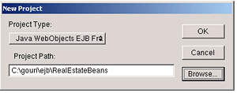
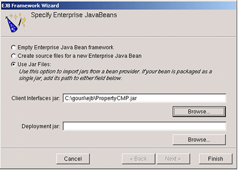

Legacy Document
Important: The information in this document is obsolete and should not be used for new development.
Developing Bean Frameworks
This chapter shows how to create enterprise-bean frameworks to be used by client applications. It contains the following sections:
“Adding Source Files to a Bean-Framework Project” explains how to add enterprise-bean source files to an existing bean framework.
“Adding JAR Files to a Bean-Framework Project” describes how to add JAR files of enterprise beans to an existing bean framework.
“Creating Frameworks From Bean JAR Files in Windows” focuses on creating bean frameworks from JAR files in Windows.
“Adding CMP Fields to an EJB Deployment Descriptor” provides an example of an EJB deployment descriptor for an entity bean with elements for CMP fields, which are the attributes whose persistence are the responsibility of the bean container.
“Generating EJB Stubs” covers EJB-stub generation.
Adding Source Files to a Bean-Framework Project
To add new enterprise-bean source files to an existing enterprise-bean framework project, follow these steps:
Choose File > New File.
Choose Enterprise JavaBean from the New File pane of the Project Builder Assistant.
In the New Enterprise JavaBean pane of the Assistant:
Enter the name of the bean in the File Name text field.
Enter the location where you want to place the bean’s source files in the Location text field.
Choose the project you want to add the bean to from the Add to Project pop-up menu.
Select “Create source files for a new Enterprise JavaBean” in the Create New Enterprise JavaBean pane.
Select the type of bean you want to create in the Choose Bean Type pane of the Assistant.
In the Enterprise JavaBean Class Name pane:
Enter the class name of the bean in the Class Name text field.
Enter the package name in the Package Name text field.
Adding JAR Files to a Bean-Framework Project
To add an enterprise-bean JAR file to an existing enterprise-bean framework project follow these steps:
Choose File > New File.
Choose Enterprise JavaBean form the New File pane of the Project Builder Assistant.
In the New Enterprise JavaBean pane of the Assistant:
Enter the name of the bean in the File Name text field.
Choose the project you want to add the bean to from the Add to Project pop-up menu.
In the Create New Enterprise JavaBean pane:
Creating Frameworks From Bean JAR Files in Windows
In Windows, you have to create one enterprise-bean framework per JAR file. Follow these steps to create an enterprise-bean framework:
Launch Project Builder.
Choose Project > New.
Choose Java WebObjects EJB Framework from the Project Type pop-up menu in the New Project dialog and enter a location for your project.
In the Specify Enterprise JavaBeans pane of the EJB Framework Wizard:
Select “Use JAR Files.”
Enter the location of the JAR file you want to use in the “Client Interfaces jar” text field.

After WebObjects finishes generating the project, you should see a window like the one in Figure 5-1.
Adding CMP Fields to an EJB Deployment Descriptor
After creating a bean framework using Project Builder, you have to add to the deployment descriptor the fields whose persistence is to be managed by the EJB container. To accomplish this, you add cmp-field elements to the ejb-jar.xml file in the META-INF directory of your project.
Listing 5-1 lists the deployment descriptor of a simple entity bean with container-managed persistence. The numbered lines show the cmp-field elements.
Listing 5-1 Deployment descriptor for a CMP entity bean
<?xml version="1.0" encoding="UTF-8"?> |
<!DOCTYPE ejb-jar PUBLIC '-//Sun Microsystems, Inc.//DTD Enterprise JavaBeans 1.1//EN' 'http://java.sun.com/j2ee/dtds/ejb-jar_1_1.dtd'> |
<ejb-jar> |
<description>deployment descriptor for PersonBean</description> |
<display-name>PersonBean</display-name> |
<enterprise-beans> |
<entity> |
<description>deployment descriptor for PersonBean</description> |
<display-name>PersonBean</display-name> |
<ejb-name>PersonBean</ejb-name> |
<home>com.my.ejb.PersonHome</home> |
<remote>com.my.ejb.Person</remote> |
<ejb-class>com.my.ejb.PersonBean</ejb-class> |
<persistence-type>Container</persistence-type> |
<prim-key-class>com.my.ejb.PersonPK</prim-key-class> |
<reentrant>False</reentrant> |
<resource-ref> |
<description>the default data source for a CMP bean.</description> |
<res-ref-name>jdbc/DefaultCMPDatasource</res-ref-name> |
<res-type>javax.sql.DataSource</res-type> |
<res-auth>Container</res-auth> |
</resource-ref> |
<cmp-field>// 1 |
<field-name>PersonID</field-name>// 2 |
</cmp-field>// 3 |
<cmp-field>// 4 |
<field-name>firstName</field-name>// 5 |
</cmp-field>// 6 |
<cmp-field>// 7 |
<field-name>lastName</field-name>// 8 |
</cmp-field>// 9 |
<cmp-field>// 10 |
<field-name>middleInitial</field-name>// 11 |
</cmp-field>// 12 |
<cmp-field>// 13 |
<field-name>dateOfBirth</field-name>// 14 |
</cmp-field>// 15 |
</entity> |
</enterprise-beans> |
</ejb-jar> |
Generating EJB Stubs
When you build a bean-framework project you have the option of generating the EJB stubs or not generating them. The EJB_STUB_GENERATION build setting of the EJB Client Interfaces target is how you tell Project Builder whether to create these stubs. The build setting can have two values: OpenORB and None. By default, the build setting is set to OpenORB. This means that stubs are generated. By setting the build setting to None, you tell Project Builder not to generate the stubs, which makes building bean-frameworks faster. However, this setting requires that the WOEJBTransport property be set to IntraVM. For more on the WOEJBTransport property, see “Communication Transport Between Bean Clients and Containers.”
You access the EJB_STUB_GENERATION build setting through the Expert View of the EJB Client Interfaces target, as shown in Figure 5-2.
In Windows, you find the EJB_STUB_GENERATION build setting in the Makefile.preamble file of the EJBServer subproject.
In bean-framework projects created with a version of WebObjects earlier than 5.2, you may have to add the build setting yourself. Just click “Add new build setting” in the lower-left corner of the Build Settings pane.
© 2001, 2004 Apple Computer, Inc. All Rights Reserved. (Last updated: 2004-10-05)